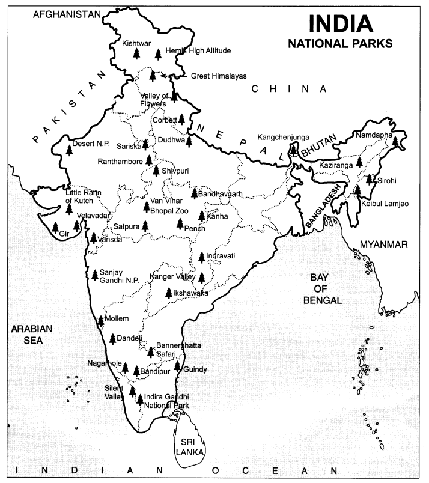
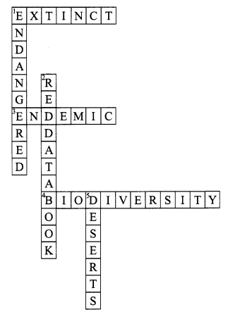

NCERT Solutions for Class 8 Science Chapter 7 Conservation of Plants and Animals
Topics and Sub Topics in Class 8 Science Chapter 7 Conservation of Plants and Animals:
| Section Name | Topic Name |
| 7 | Conservation of Plants and Animals |
| 7.1 | Deforestation and Its Causes |
| 7.2 | Consequences of Deforestation |
| 7.3 | Conservation of Forest and Wildlife |
| 7.4 | Biosphere Reserve |
| 7.5 | Flora and Fauna |
| 7.6 | Endemic Species |
| 7.7 | Wildlife Sanctuary |
| 7.8 | National Park |
| 7.9 | Red Data Book |
| 7.10 | Migration |
| 7.11 | Recycling of Paper |
| 7.12 | Reforestation |
Conservation of Plants and Animals Class 8 Science NCERT Textbook Questions
Question 1.
Fill in the blanks.
(a) A place where animals are protected in their natural habitat is called ______
(b) Species found only in a particular area is known as ______
(c) Migratory birds fly to faraway places because of ________ changes.
Answer:
(a) Wildlife sanctuary
(b) endemic species
(c) climatic
Question 2.
Differentiate between the following.
(a) Wildlife sanctuary and biosphere reserve
| Wildlife sanctuary | Biosphere reserve |
| The area reserved in a forest for the protection of wild animals. | The area meant for the protection or conservation of the biodiversity. It also helps in maintaining the culture of that area. |
(b) Zoo and wildlife sanctuary
| Zoo | Wildlife sanctuary |
| A place where animals are protected in an artificial habitat, for an exhibition. | A protected area where animals live in their natural habitat. |
(c) Endangered and Extinct species
| Endangered species | Extinct species |
| The species of animals whose numbers are diminishing to such a level that they might face extinction. | The species of animals whose number is zero because of changes in their habitat and other calamities. |
(d) Flora and Fauna
| Flora | Fauna |
| The plants which are found in a particular area; e.g.Jamun, sal, etc. | The animals which are found in a particular area; e.g., leopard, cheetah, elephant, etc. |
Question 3.
Discuss the effects of deforestation on the following:
(a) Wild animals
(b) Environment
(c) Villages (Rural areas)
(d) Cities (Urban areas)
(e) Earth
(f) The next generation
Answer:
(a) Wild animals: Trees are the habitats as well as sources of food for the wild animals. Deforestation leads to the destruction of the natural habitats of wild animals.
(b) Environment: Deforestation increases the temperature and pollution level of the environment. With the increase in the carbon dioxide level and a decrease in the oxygen level, it gives rise to global warming. It also lowers the level of ground water. Moreover, deforestation decreases the soil fertility and so, increases the chances of natural calamities.
(c) Villages (Rural areas): The decline in rainfall, the decrease in soil fertility, and the chances of natural disaster affect the village life.
(d) Cities (Urban areas): Deforestation result in global warming. It also results in the increase in the level of pollution. Hence, deforestation affects the life in cities.
(e) Earth: Deforestation decreases the fertility of soil. It changes the physical properties of soil. All these changes result in desertification.
(f) The next generation: Deforestation will majorly affect the life of next generation. The next generation will face problems at every step. Climatic conditions will be adversely affected. There will be scarcity of food and clean environment. Next generation won’t be able to see most of the animal species due to habitat loss.
Question 4.
What will happen if
- we go on cutting trees
- the habitat of an animal is disturbed.
- the top layer of soil is exposed.
Answer:
- If we go on cutting trees, then:
- the temperature will increase to a greater extent.
- the chances of natural disaster to occur will increase.
- the water cycle will get disturbed.
- If the habitat of an animal is disturbed, then:
- the animals will lose their natural habitat and will reach the level of being endangered.
- most of the animals may be forced to invade places meant for human living in search of food and shelter.
- If the top layer of soil is exposed, then:
- the exposed layer will lose all its nutrients, especially the hummus.
- the water holding capacity of soil will decrease.
- desertification will take place.
Question 5.
Answer in brief.
- Why should we conserve biodiversity?
- Protected forests are also not completely safe for wild animals. Why?
- Some tribals depend on the jungle. How?
- What are the causes and consequences of deforestation?
- What is Red Data Book?
- What do you understand by the term migration?
Answer:
- The variety in life existing on the earth, their inter-relationships, and their relationships with the environment is referred to as biodiversity. We should conserve biodiversity so as to maintain the food chain. The disturbance in the food chain may affect the whole ecosystem.
- Since capturing and killing of animals by poachers is still rampant in protected forests and areas, so they are not safe for wild animals.
- Some tribes depend on the jungle for the fulfillment of their basic needs of life, such as food, medicine, clothing, shelter, etc.
- The causes of deforestation may be the following:
- Natural causes like forest fires, droughts, etc.
- Building factories and houses.
- Procuring land for cultivation.
- Making furniture and using wood as fuel.
The consequences of deforestation are: - Natural calamities like floods, etc.
- Increase in the temperature of the earth, i.e., global warming.
- Change in the physical properties of soil.
- A decrease in groundwater level.
- Extinction of many flora and fauna.
- Red Data Book is a sourcebook which keeps records of all endangered plants and animals.
- Migration means the movement of a species from its own habitat to some other place during a certain period in a year for breeding or to overcome some climatic conditions.
Question 6.
In order to meet the ever-increasing demand in factories and for shelter, trees are being continually cut. Is it justified to cut trees for such projects? Discuss and prepare a brief report.
Answer:
It’s not justified to cut trees just to fulfill our needs. Trees are known as ‘the lung of the earth’. They are the habitat of many living organisms, including animals. They give us oxygen, and maintain the O2-CO2 balance as well. They firmly bind the soil and hence prevent soil erosion. They also reduce the chances of natural disasters like floods and droughts. They help conserve our rich biodiversity. The cutting of trees causes an increase in the carbon dioxide (CO2) level, which results in global warming. Moreover, it causes soil erosion, floods, the greenhouse effect, etc. Hence, trees must be protected.
Question 7.
How can you contribute to the maintenance of green wealth of your locality? Make a list of actions to be taken by you.
Answer:
By taking up the following actions, I can contribute to the maintenance of green wealth of my locality by:
- Planting saplings and trees.
- Not throwing the garbage on the streets.
- Forbidding others to cut trees.
- Making people aware of the significance of a clean and green environment.
- Watering the plants regularly and taking proper care of them.
- Reusing and recycling paper to save trees, energy, and water.
Question 8.
Explain how deforestation leads to reduced rainfall.
Answer:
Trees give out a huge amount of water in the form of water vapour during transpiration. The reduction of water vapour affects cloud formation and thus, results in less rainfall.
Question 9.
Find out about national parks in your state. Identify and show their location on the outline map of India.
Answer:
Consider the map given below:

Question 10.
Why should paper be saved? Prepare a list of ways by which you can save paper.
Answer:
A large number of trees can be saved by saving paper. This will also save water that is used to manufacture paper. Moreover, the harmful chemicals used in papermaking will show their least effects on human beings and other organisms.
Some ways to save paper are the following:
- recycling of paper.
- economical use of paper.
- paper should not be burnt.
Question 11.
Complete the word puzzle.
Down
1. Species on the verge of extinction.
2. A book carrying information about endangered species.
5. Consequence of deforestation.
Across
1. Species which have vanished.
3. Species found only in a particular habitat.
4. Variety of plants, animals and microorganisms found in an area.
Solution:

Conservation of Plants and Animals Class 8 Science NCERT Intext Activities Solved
Activity 1 (NCERT Textbook, Page 77)
Add more causes of deforestation to your list and classify them into natural and man-made.
Solution:
Natural causes of deforestation:
(i) Forest fires
(ii) Severe drought
Man-made causes of deforestation:
(i) Wood for the manufacturing of paper.
(ii) Wood for fuel and the making of houses.
Activity 2 (NCERT Textbook, Page 78)
Animal life is also affected by deforestation. How? List the points and discuss them in your class.
Solution:
(i) Due to deforestation, a great disturbance is caused in the food chain.
(ii) Deforestation makes the animals homeless.
(iii) Due to deforestation, animals become easy prey for hunters.
(iv) Herbivorous animals face the scarcity of food due to deforestation.
(v) Animals face bad effects of natural calamities.
Activity 3 (NCERT Textbook, Page 79)
Find out the number of national parks, wildlife sanctuaries and biosphere reserves in your district, state and country. Record in Table 7.1. Show these areas in an outline map of your state and India.
Protected Areas for Conservation
| Protected Areas | National Park | Wildlife Sanctuary | Biosphere Reserve |
| In my district | |||
| In my state | |||
| In my country |
Solution:
Do it yourself.
Activity 4 (NCERT Textbook, Page 80)
List the factors disturbing the biodiversity of your area. Some of these factors and human activities may disturb the biodiversity unknowingly. List these human activities. How can these be checked? Discuss in your class and write a brief report in your notebook.
Solution:
Cutting of trees, rising air, water and land pollution, excessive construction, using more resources or their products affect the biodiversity harshly.
Activity 5 (NCERT Textbook, Page 81)
Try to identify the flora and fauna of your area and list them.
Solution:
Flora (trees and plants): Pipal, sal, teak, kadamb, babool, mango, guava, ferns, arjun, keekar, etc., are flora present in our locality.
Fauna (animals): Blue-bull, chinkara, cheetal, deer, leopard, wolf, wild dog, etc., are the fauna present in our locality.
Activity 6 (NCERT Textbook, Page 81)
Find out the endemic plants and animals of the region where you live.
Endemic plants: Mahua, wild mango, sal, jamun, etc.
Endemic animals: Bison, Indian giant squirrel, etc.
Activity 7 (NCERT Textbook, Page 82)
Visit a nearby zoo. Observe the conditions provided to the animals. Were they suitable for animals? Can animals live in an artificial setting instead of their natural habitat? In your opinion, will the animals be comfortable in a zoo or in their natural habitat?
Solution:
A zoo tends to provide suitable conditions for the animals to live in, similar to their natural habitat.
Yes, animals can live in an artificial setting instead of their natural habitat, as they live in natural environment and stay protected*from people.
As per my opinion, animals are safer in the zoo in comparison with their natural environment, because special care is taken for the animals in the zoo. But I think animals feel more comfortable to live in their natural habitat as no one wants to live in prison.
NCERT Solutions for Class 8 Science Chapter 7 – 1 Mark Questions and Answers
Question 1.
What is meant by deforestation ?
Answer:
Deforestation means clearing of forests,and using that land for other purpose like building houses and factories.
Question 2.
What is meant by biosphere ?
Answer:
Biosphere is that part of the earth in which living organisms exist or which supports life.
Question 3.
Define biodiversity.
Answer:
Biodiversity means the variety and variability of all microorganisms, plant and animal life.
Question 4.
Name two animals which have become extinct. [NCT 2011]
Answer:
The mountain quail of Western Himalyas and the pink head duck.
Question 5.
What are Biosphere reserves ?
Answer:
Biosphere reserves are the areas meant for conservation of microorganisms, plants and animals.
Question 6.
Define species.
Answer:
Species is a group of individuals which are capable of interbreeding with each other.
Question 7.
What are endemic species ?
Answer:
Endemic species are exclusively found in a particular area only in small numbers.
Question 8.
What is meant by Wildlife sanctuaries ?
Answer:
Wildlife sanctuaries are some areas where wild animals are protected and preserved
Question 9.
What are National Parks ?
Answer:
National parks are reserves that protect the flora and fauna of the place.
Question 10.
Why has the survival of some animals become difficult ?
Answer:
Survival of some animals has become difficult because of changes in their natural habitat.
Question 11.
What is meant by ecosystem ?
Answer:
An ecosystem comprises of all the plants, animals and microorganisms in an area along with non-living components such as climate, soil, river, etc.
Question 12.
What is Red Data Book ?
Answer:
Red Data Book is the source book which keeps a record on population status of the species included in the Red List.
Question 13.
What are migratory birds ?
Answer:
Birds who cover long distances to reach another land are known as migratory birds.
Question 14.
Name the first Reserve Forest of India.
Answer:
Satpura National Park.
Question 15.
Name two wildlife sanctuaries of India.
Answer:
Kangha and Sultanpur.
Question 16.
Kaziranga and Corbett are …………. of India.
Answer:
National parks.
Question 17.
Name two endangered species of animals.
Answer:
The bison and antelope are endangered species of animals.
Question 18.
Why should soil be conserved ?
Answer:
Soil should be conserved to maintain the fertility of the soil.
Question 19.
Name two animal species which have become extinct in the past years.
Answer:
Dodo and thylacine.
Question 20.
Give one word for species found only in a particular area.
Answer:
Endemic species.
Question 21.
Name the organisation that produces the Red List.
Answer:
IUCN (International Union for Conservation of Nature and Natural Resources).
NCERT Solutions for Class 8 Science Chapter 7 – 2 Mark Questions and Answers
Question 1.
Why do we feel the need for conserving natural resources more than our ancestors did ? Give two reasons.
Answer:
We have to conserves the natural resources because :
- the population of the world has increased.
- as man has progressed his needs have increased.
Question 2.
Differentiate between the following : [NCERT]
- Wildlife sanctuary and Biosphere reserve.
- Zoo and Wildlife sanctuary.
- Endangered and Extinct species.
- Flora and Fauna.
Answer:
- Wildlife sanctuary is a reserve area where wild animals are protected and preserved.
Biosphere reserves are the areas meant for conservation of biodiversity, i.e., variety of plants, animals and microorganisms. . - Zoo is a place where animals live in artificial settings for public display. Wildlife sanctuary is a place where animals live in their natural habitat within a protected area.
- Endangered species are those whose number are diminishing and are facing extinction. Extinct species are those which are already finished.
- Flora are the plants found in a particular area and fauna are the animals found in a particular area.
Question 3.
What is the role of small animals in the ecosystem ?
Answer:
The role of small animals is important because they form a part of the food chain and food webs.
Question 4.
Name the flora and fauna of Pachmarhi Biosphere Reserve.
Answer:
Flora – Sal, teak, mango, jamun, silver fern, arjun.
Fauna – Chinkara, blue bull, barking deer, cheetah, leopard, wild dog, wolf.
Question 5.
Name two endemic flora and endemic fauna of Pachmarhi Biosphere Reserve.
Answer:
Endemic flora – Sal and wild mango
Endemic fauna – Bison, Indian giant squirrels and flying squirrels.
Question 6.
Give two reasons why sanctuaries should be maintained.
Answer:
- Sanctuaries are places where killing (poaching) or capturing of any animal is strictly prohibited.
- Sanctuaries provide protection and suitable living conditions to wild animals.
Question 7.
What are Rock shelters ? Where are they found ?
Answer:
Rock shelters are found inside the Satpura National Park. These are the prehistoric evidences of human life in these jungles, which give us an idea about the life of primitive humans.
Question 8.
What is Project Tiger ? What is its objective ?
Answer:
Project Tiger was launched on 1st April 1973 by our government to protect the tigers of the country.
Question 9.
Why should paper be saved ?
Answer:
We should save paper because it takes 17 full grown trees to make one tonne of paper.
Question 10.
How can we save paper ?
Answer:
We should reuse used paper and recycle it.
Question 11.
How can the resources be conserved ?
Answer:
Resources can be conserved by :
- not wasting the resources.
- maintaining their quality
Question 12.
Which factors are responsible for cutting of forest ?
Answer:
As man’s need for land used in housing and farming and wood for fuel and construction increased, he started cutting down forests.
Question 13.
Expand
- WWF
- IUCN
Answer:
- World Wildlife Fund.
- International Union for Conservation of Nature and Natural Resources
Question 14.
How can overgrazing destroy forests ?
Answer:
Due to overgrazing, the young trees get eaten or killed by trampling. The lower leaves are eaten up and the roots and trunks are injured by cattle.
Question 15.
How does vegetation help to conserve water ?
Answer:
Vegetation slows down the flow of rain water on land and increases the absorption of water by the soil.
Question 16.
Give the difference between Red List and Red Data Book.
Answer:
The Red List is a compilation of endangered wildlife species. The Red Data Book provides data on population status of the species included in the Red List.
NCERT Solutions for Class 8 Science Chapter 7 – 3 Mark Questions and Answers
Question 1.
- What is Top soil ?
- Mention two ways by which soil erosion can be prevented. [DA V (Winter) 2001]
Answer:
- Top soil is the layer of soil contains rock particles, living organisms and humus.
- Soil erosion can be prevented by :
- Contour or step farming, which reduces the flow of water.
- Planting trees as the roots help to bind the soil.
Question 2.
Mention two steps needed for conserving wildlife. Name two endangered species of animals.
Answer:
The following steps can be taken to conserve wildlife :
- by preserving the habitat of wildlife.
- by making hunting regulations and ensuring their effective implementation.
Bison and Beaver are two endangered species.
Question 3.
“When we conserve forests, we conserve wildlife and soil also”. Discuss. [DAV2002]
Answer:
Wildlife conservation is related to forest conservation. Man has cleared forests, converted grasslands into farmlands and flooded large areas by constructing dams. This has destroyed the habitat of the wildlife. Forests prevent soil erosion and maintain the fertility of the soil.
Question 4.
Explain three ways to conserve forests. [DAV2001]
Answer:
Three ways to conserve forests are : .
- Planned harvesting — cutting few trees at a time, so that the uncut trees prevent soil erosion and make seeds.
- Protection from fire.
- Protection from overgrazing by cattle, sheep, horses, etc.
Question 5.
How can the cutting of trees affect the ecological balance of a particular area ? [DAV (Winter) 1999]
Answer:
Cutting of trees :
- Disturbs the habitat of wild animals, which would lead to extinction of animal.
- Promotes soil erosion.
- More floods are caused
- Disturbs oxygen – carbon dioxide percentage.
Question 6.
Fill in the blanks : [NCERT]
- A place where animals are protected in their natural habitat is called …………
- Species found only in a particular area is known as ……………
- Migratory birds fly to far away places because of ………. changes
Answer:
- Sanctuary
- Endemic species
- Climatic
Question 7.
What will happen if: [NCERT]
- we go on cutting trees.
- the habitat of an animal is disturbed.
- the top layer of the soil is exposed.
Answer:
- If we go on cutting trees, rainfall and fertility of the soil will decrease. The chances of natural calamities such as floods and drought will increase. It will lead to decrease in the water holding capacity of the soil and movement of water from the soil surface into the ground. Animal life is also affected by deforestation.
- If the habitat of an animal is disturbed, it endangers their existence. Survival of some animals becomes difficult because of the disturbances in their natural habitat.
- Removal of the top layer of soil exposes the lower hard and rocky layers. This soil has less humus and it is less fertile. Gradually the fertile land can convert into deserts.
Question 8.
“Water is renewable but oil is not”. Explain.
Answer:
Water evaporates from forest and other vegetation and condenses in the upper layers of the atmosphere to form clouds and then it rains. The water goes down in the soil and is therefore, a renewable source.
Oil is found below the earth in crude form. It is formed after millions of years. When the oil is used, it is lost. Therefore, it is not a renewable source.
Question 9.
What is the difference in conservation of renewable and non-renewable resources ?
Answer:
Conserving of renewable resources is to utilise them in such a way that nature is able to replenish them as fast as they are used. In the case of non-renewable resources it is not so. These resources take a long time in their formation and will get finished very soon. So, they should be used judiciously.
NCERT Solutions for Class 8 Science Chapter 7 – 5 Mark Questions and Answers
Question 1.
Discuss the effects of deforestation on the following : [NCERT]
- Wild animals.
- Environment.
- Villages (Rural areas).
- Cities (Urban areas).
- Earth.
- The next generation.
Answer:
- The natural habitat of wild animals is destroyed by deforestation.
- Deforestation decreases the level of oxygen in the atmosphere and ground water level.
- In the rural areas deforestation leads to loss in soil fertility and increased chances of natural calamities such as floods and drought.
- Deforestation will lead to global warming in the cities.
- On 4he whole earth, deforestation would lead to high temperatures and increased pollution level natural calamities and reduced levels of oxygen and ground water.
- The next generation would not have enough wood and paper.
Question 2.
Answer in brief: [NCERT]
- Why should we conserve biodiversity ?
- Protected forests are also not completely safe for wild animals. Why ?
- Some tribals depend on the jungle. How ?
- What are the causes and consequences of deforestation ?
- What is Red Data Book ?
- What do you understand by the term migration ?
Answer:
- Biodiversity is important for all living creatures for the preservation of environment and for economic reasons. Biodiversity is useful in scientific and medical research.
- Protected forests are also not safe because people living in the neighbourhood encroach upon them and destroy them.
- Many tribes still live in the jungle and are depend on the trees and the animals for their survival.
- Causes of deforestation :
- Using land for cultivation.
- Building houses and factories.
- Making furniture or using wood as a fuel.
- Forest fires and severe drought.
- Consequences of deforestation:
- Increases the temperature and pollution level on the earth.
- Decreases the level of oxygen in the atmosphere and lowers ground water level.
- Increases chances of natural calamities.
- Promotes soil erosion.
- Migration means movement of the birds to far away specific areas every year during a particular time because of climatic changes.
Question 3.
List the methods by which non-renewable resources can be conserved.
Answer:
Non-renewable resources can be conserved by following methods :
- Avoid wasteful use of sources.
- Recycling resources e.g., paper, plastic bottles, etc.
- Finding substitutes for non-renewable sources of energy, that is using alternative sources of energy such as solar energy, wind energy, etc.
- Repair and use the appliance rather than discard it as soon as it gets spoilt.
Question 4.
“Conservation of resources means not only using the resources judiciously but also maintaining their quality”. Discuss.
Answer:
This statement is correct because if we have the resources of poor quality, it is of no use. We may have enough water, but if it is polluted it causes more harm than benefit. It causes many diseases in human beings and animals. Polluted air causes more harm in many cities as people get many diseases.
Question 5.
Why is managing of resources not very simple ?
Answer:
Managing resources is not very simple because the problems are inter related. Solving one problem leads to another problem. Banning of insecticides will save wildlife but will lead to shortage of food due to destruction of crops by insects. So, we can say that banning of one thing leads to shortage of another thing.
Question 6.
- How does planting of trees help to conserve soil ?
- Why should chemical fertilisers be used with caution ?
Answer:
- The roots of trees helps to find the soil and prevent soil erosion. Rows of trees planted along the edges of farms act as wind breakers and prevent erosion by wind.
- Chemical fertilisers damage the porous structure of the soil and also kill soil organisms such as earthworms which add loose fertile soil to the fields.
Question 7.
- What are endemic species ? “
- Why are these endemic species ?
Answer:
- The species which are unique to a specific region are known as endemic species. Sal and wild mango are two example of endemic flora and bison and flying squirels are examples of endemic fauna.
- These are endemic species because
- their ecological requirements are met over a small area.
- they are not capable of moving to other suitable habitats.
Question 8.
- What are the five conservation categories of wildlife ?
- How many biosphere reserves, national parks and sanctuaries are there in India ?
Answer:
- There are five conservation categories of wildlife — extinct, endangered, vulnerable, rare and unsufficiently known species.
- There are 15 biosphere reserves, 90 national parks and 448 sanctuaries in India.
NCERT Solutions for Class 8 Science Chapter 7 MCQs
Question 1.
Conversion of fertile land into deserts is known as
(a) deforestation
(b) desertification
(c) conservation
(d) none of these.
Answer:
(b)
Question 2.
The variety of life on the earth is commonly referred to as
(a) biodiversity
(b) biosphere
(c) afforestation
(d) none of these.
Answer:
(a)
Question 3.
The first national park in India is
(a) Bandipur national park
(b) Kaziranga national park
(c) Jim Corbett national park
(d) Satpura national park.
Answer:
(c)
Question 4.
All type of plant life is known as
(a) fauna
(b) flora
(c) forest
(d) none of these.
Answer:
(b)
Question 5.
When no member of a species exists, it is known as
(a) endemic species
(b) endangered species
(c) extinct
(d) vulnerable species.
Answer:
(c)
Question 6.
Snow leopard is
(a) vulnerable species
(b) endangered species
(c) extinct
(d) endemic species.
Answer:
(b)
Question 7.
A species found only in one particular place is known as
(a) endemic
(b) vulnerable
(c) endangered
(d) extinct.
Answer:
(a)
Question 8.
Migration of birds takes place because
(a) they like to travel
(b) to find abundant food
(c) to meet other birds
(d) none of these.
Answer:
(b)
Question 9.
Growing new trees in forests is known as
(a) deforestation
(b) desertification
(c) afforestation
(d) none of these.
Answer:
(c)
Question 10.
How many Biosphere Reserves in India has the Indian Government established ?
(a) 10
(b) 5
(c) 14
(d) 20
Answer:
(c)
More CBSE Class 8 Study Material
- NCERT Solutions for Class 8 Maths
- NCERT Solutions for Class 8 Science
- NCERT Solutions for Class 8 Social Science
- NCERT Solutions for Class 8 English
- NCERT Solutions for Class 8 English Honeydew
- NCERT Solutions for Class 8 English It So Happened
- NCERT Solutions for Class 8 Hindi
- NCERT Solutions for Class 8 Sanskrit
- NCERT Solutions